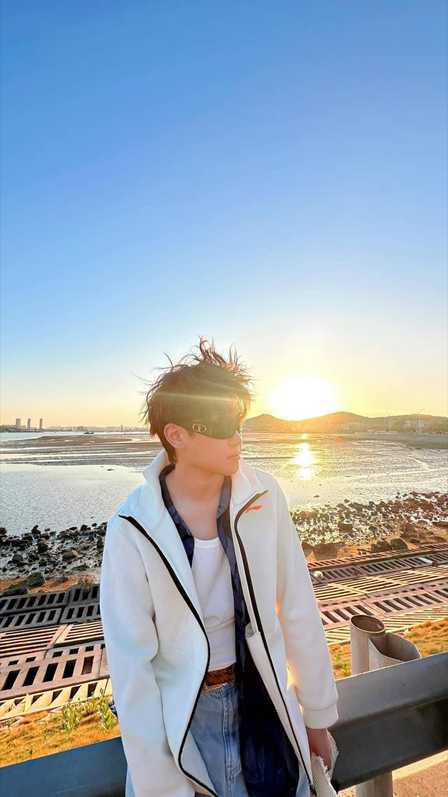

陈奕洁 / 汽车内容创作筹备中
把车拍清楚。
把话讲明白。
用拍车实景，配上自己的声音。
从新手的视角出发，聊看车细节和日常用车。
汽车检测与维修 · 专业背景实景拍摄 × 本人配音
CYJ / SHOT PLANNING● 创作示意
看细节，也看真实的日常。NO. 001 ↗
我的创作方式
拍到的，讲具体。／没体验的，不装懂。
REAL FOOTAGE. MY OWN VOICE.01 / THE NEXT SHOT
先从这些问题，开拍。
这是准备拍摄的选题，尚非已完成作品。
点开卡片，可以看到拍摄思路与配音提纲。
作品区 · 待更新
001留给我的第一条汽车实拍。
这里将展示后续完成的汽车实拍。

BEHIND THE CAMERA / 镜头后面的我03 / THE PERSON BEHIND IT
我是陈奕洁，
想把学过的汽车知识，
变成听得懂的内容。
21 岁，大学学的是汽车检测与维修。现在想做一个汽车内容账号，用自己拍的画面、自己录的声音，记录观察和学习。
我会从静态看车、日常用车这些具体问题开始。涉及车型参数和使用要求时，先核对对应车型的官方资料；亲自体验过的，再讲自己的感受。
学习背景汽车检测与维修
创作形式实景拍摄 + 本人配音
内容方向看车细节 / 新手用车
目前阶段选题与拍摄筹备
LET’S TALK ABOUT CARS
你关心的汽车问题，
也可以成为我的下一个选题。
交流选题、提供拍摄机会，或聊聊汽车内容创作。